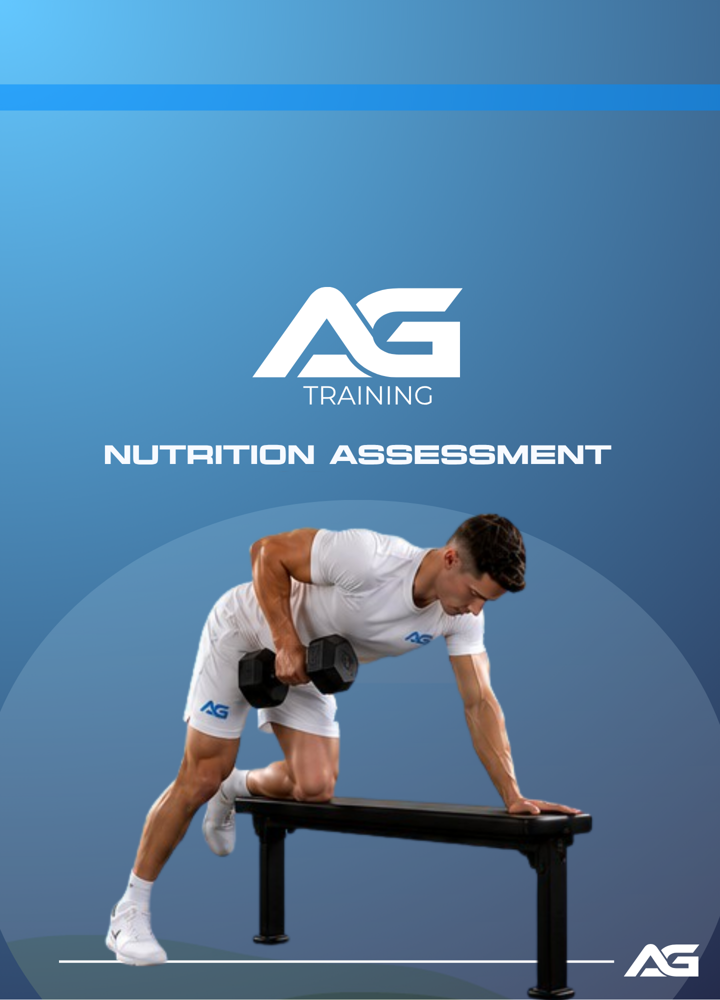
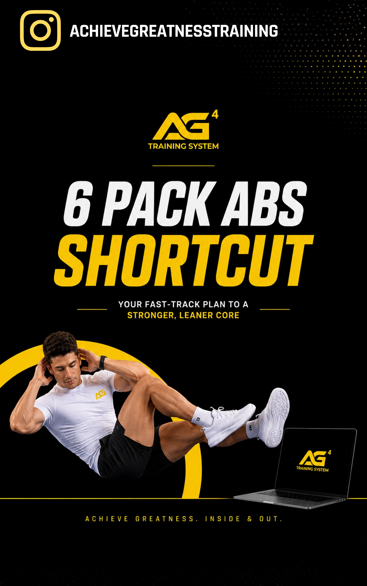
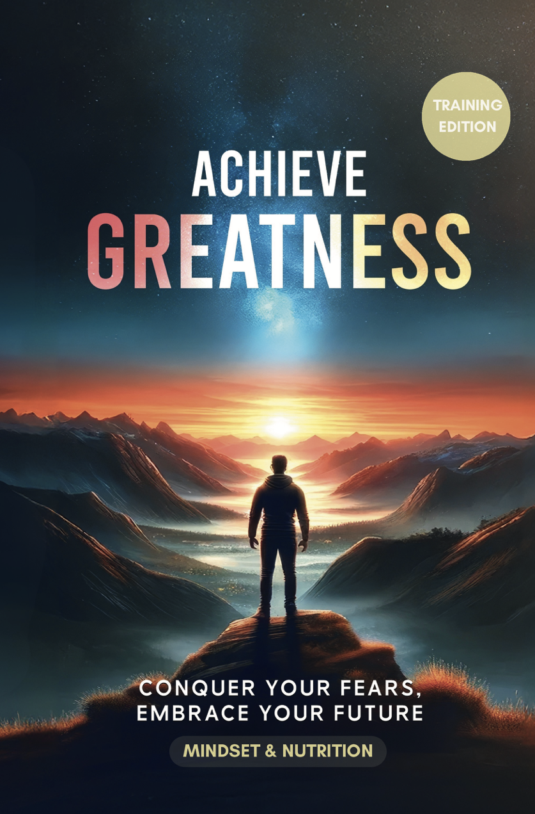
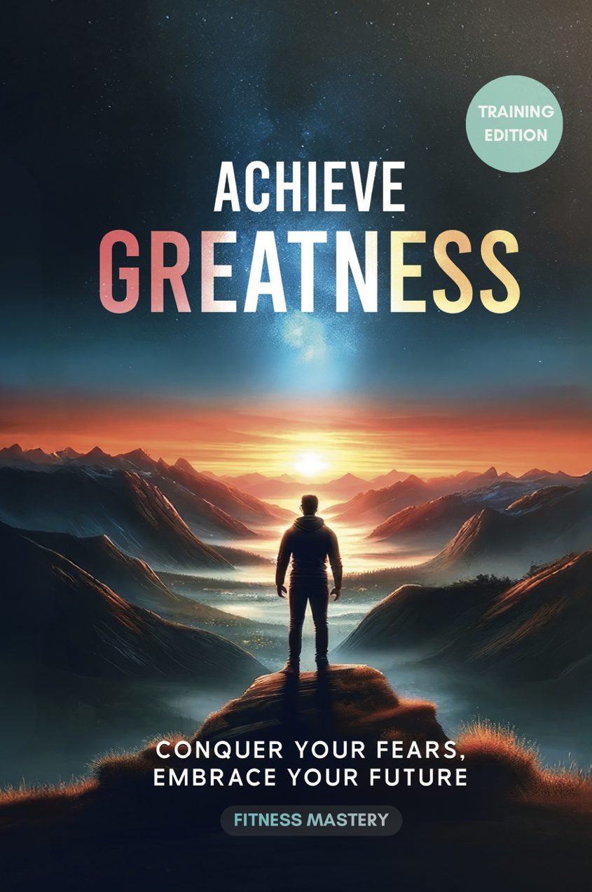
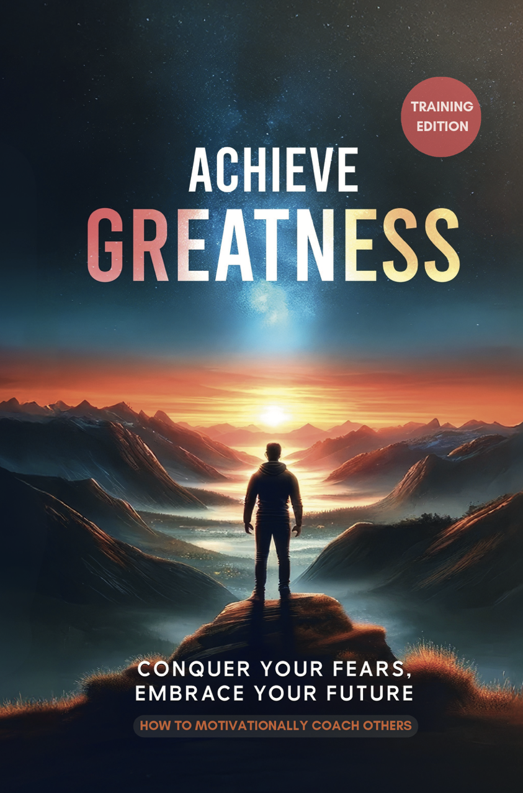

AG4 – Beginner
Foundational program for new clients
AG4 – Intermediate
Next step up for established clients
AG4 – Advanced
Program for advanced gym-goers.
Program Selector
Simple questionnaire to match you with the most suitable AG4 programme
AG4 Variety Workouts
Mix it up — variety sessions across all levels
Shoulders + Arms Death Star Delts
Level: Late Beginner
Targeted For: Males
Barbell Overhead Shoulder Press 4 x 10
Arnold Press 3 x 10
Lateral Raise AG Dropsets 3 x 15
Machine Shoulder Press 3 x 10
Bicep Curl Machine 4 x 12
Tricep Extensions Machine 3 x 12
Overhead Tricep Extensions 3 x 15
Abs - AG 6 Minute Abs Workout.
Heavy Lifting Strength Workout
Level: Late Beginner
Targeted For: Males & Females
"A full-body workout for when you just want to lift heavy and get some hormones released."
Deadlifts 3 sets of 10
Squat 3 sets of 10
Smith Incline Bench 3 sets of 10
Barbell Row Heavy 3 sets of 10
Arnold Schwarzenegger Home Workout
Level: Late Beginner
Targeted For: Males & Females
"This workout is recommended by the great bodybuilding champion himself, as a way to build mass at home. Arnold recommends being able to complete this workout as a way to prepare your whole body to be strong before moving on to weights!"
Push Ups x 50 beg 100 int 150 adv
Dips Between Chairs 5 x 20
Rowing With Broom Between Chairs 50 Total
Sit Ups With Legs Pinned Down 200 Total
Bent Leg Raises 50 Total
Bent Over Broom Twists 50 Total
Squats 70 Reps
Calf Raises 50 Reps
Close Grip Chin Ups 30 Total
Thor Workout
Level: Intermediate
Targeted For: Males
"This is Chris Hemsworth's workout routine, the actor who played the superhero Thor, this is the stripped back version."
Incline bench 12 10 8 8 6 4 - 6 sets
Incline DB bench - 4 sets x 12
Chest Press Machine - 3 x 15
Chest Fly Machine - 4 x 12
Dips 4 x 15
Savage Workout
Level: Intermediate
Targeted For: Males & Females
One set max pull ups. (Really wide pull ups)
Lat Pull Down - Heavy! 3 x 15 (pull with force, not slow)
T bar Row 3 x 10
Cable Row - One Arm (pull with force, not slow) 3 x 15
Deadlift 3 x 10
Squats 3 x 10
Sore Upper Chest Workout
Level: Intermediate
Targeted For: Males
Incline DB Shoulder Press - 4 x 10 plus Barbell Superset (Pick Up A Barbell Of A Lower Weight Straight After The Dumbells, Do 5 - 10 Extra Reps. Do This All 4 Sets.)
Incline Smith Machine Bench - Use weight that you can do 3 sets of 10 with. On the last set, do 10 reps with the normal weight, exploding with no pauses, then instantly lower the weight by 10% to do another 10 pause reps with 3-4 second pause.
Incline Chest Machine - 4 x 12
Lateral Raise AG Dropset
Tricep Pushdown Straight Bar 3 x 12
Tricep Rope Pushdown With 2s Pause at Bottom 3 x 12
Behind Head Tricep Extension Cable 3 x 12
Legs Destroyer 2.0
Level: Advanced
Targeted For: Males & Females
Warm Up - AG Light Legs Warm Up
Squats 3 x 10
Leg Extension Machine 15 Reps straight into
Dumbbell lunges 6 reps per leg, straight into Leg Press 15 reps.
30 seconds rest after all exercises are complete.
Finish 4 circuits of this.
Select 3 or 4 calves exercises from the following:
Seated Calf Raise Machine, Standing Calf Raise Machine,
Dumbbell Calf Raise On Step
45 Degree Leg Press Calf Raise, Bodyweight Calf Raise On Step
Hit all these Calve machines one after the other until failure in the 10–12 rep range with no rest.
Then take 30 seconds rest and repeat for 3 circuits.
Back Destroyer 2.0
Level: Advanced
Targeted For: Males
Warm Up: AG Pull Day Warm Up
Pull Ups To Failure
Lat Raises. 4 x 15
Cable Row 4 x 15
Rear Delt Fly. (Heavy To Light, Leaning In) 5 10 10 15
Face Pulls x Y Raise SS. (12 reps each)
Barbell Row, superset into T-Bar Row. SS Into DB Row.
Thor Chest Workout Hard Mode
Level: Advanced
Targeted For: Males
This is the workout that Chris Hemsworth used to turn himself into the superhero Thor. It is very rewarding and one of my favorites.
Bench Press 12 10 8 8 8 6 4 4
Incline DB Press 4 x 8-12 Last Set Dropset
Chest Fly - 4 x 8-12 SS if possible with:
Machine Chest Press - 4 x 15 SS Cable or Standing DB Low To High Fly
Dips 10 x 10
Incline Bench Plate Loaded Machine 3 x 10
1 Hour Push Workout
Level: Advanced
Targeted For: Males
DB Shoulder press 3 x 10 SS with barbell
Incline Bench DB 4 x 12
Smith Machine 4 x 12 last set pause rep pyramid up to 10 and back down
Chest Fly Machine 4 x 12
Incline Plate Loaded Chest Machine 4 x 12
Cable Fly 4 x 12
Chest finisher - Dips 3 x 12 and superset them with Lateral Raises.
Triceps Cable Pushdown 3 x 8
Rope Cable Pushdown 3 x 10 Pause Reps
Triceps Machine 3 x 10
Bench Dips 3 sets max SS Dumbbell Standing Kickback
1 Hour Pull (Action Hero Biceps)
Level: Advanced
Targeted For: Males
Pull Ups Max Set
Lateral Pull - 3 x 15
Barbell Row - 4 x 12
Reverse Fly - 4 x 12
Cable Row - 4 x 12
BB Bicep Curl 1 heavy set of 6rm
Cable Bicep curl 1s pause - 4 x 12
Incline Bicep Curl slow - 3 x 10
Bicep Curl Machine - 4 x 12
EZ Barbell drop set - 3 sets 15 reps, last set quickly drop 50% of plates off the EZ bar with no rest and do another 15 reps.
Advanced Full Body Mega Session
Level: Advanced
Targeted For: Males
This is for the elites! If I was to work my full body I would go from head to toe to make sure I don’t miss a muscle.
Dumbbell Shrugs 3 x 12
Dumbbell Shoulder Press 3 x 12
Lateral Raises AG Dropset 3 x 15
Rear Delts Fly Machine 3 x 15
Incline DB Bench 3 x 12
Incline Dumbell Fly 2 x 15
Chest Dips 2 x 15
Lateral Pulldown 3 x 15
Barbell Row 3 x 15
Bicep Curl Machine 3 x 10
Triceps Cable Behind Head Extension 3 x 10
Roman Chair Sit Ups 3 x failure
Back Extensions 3 x failure
Leg Press 3 x 12
Leg Extension 3 x 12
Leg Curl 3 x 12
Calves Machine 3 x 15
AG Home Workout Program
No gym required.
Male

Programming that teaches you the secrets of how to use your home to progressively overload your training, with a focus on aesthetic bodybuilding. Actually get a good workout that you feel hitting your body at home.
Female

Programming that teaches you the secrets of how to use your home to progressively overload your training, with a focus on aesthetic bodybuilding. Actually get a good workout that you feel hitting your body at home.
AG Outdoor Workout Program
Aesthetic bodybuilding programme using outdoor spaces and bodyweight training.

Nutritional Assessment
Diet assessment questionairre with tips based on your results, recipes and recommendations.

{kind=link}
6 Pack Shortcuts
Targeted core program - get a 6 pack in 10 minutes a day.

{kind=link}
Mindset and Nutrition
Book

Book 1 of my Achieve Greatness Training books, "Mindset and Nutrition" begins with some advice about how to break common limiting beleifs people have in life. It shows you how to form a habit tracker and a good day to day routine to get you on track.
Then it details everything I learned as a qualified PT about nutrition in a simple and easy to understand way, like a freind talking to you and explaining the science in a way you understand as an everyday person. The book is designed to have short paragraphs, and no massive pages full of text. It is aimed to make learning fun, simple, and not intimidating. This is an interactive book, click a section you wish to visit in the table of contents to be brought to that page.
Fitness Mastery
Book

Book 2 of my Achieve Greatness training books. Fitness Mastery contains everything I learned about fitness and muscle building bodybuilding techniques as a Personal Trainer. It is strictly about fitness training and has pictures to help you understand.
The book is designed to explain things very basically, and with images, with no large paragraphs to confuse you. Simply learn the old school and new school bodybuilding lessons and techniques Personal Trainers use without confusion. The book explains the concepts and the science to you like a freind would, in an everyday persons language. This is an interactive book, so click anywhere on the table of contents to be brought to that page.
Life Coaching
Book

Book 3 of my Achieve Greatness training books. This book is a bit different, split into two halves. The first section explains how to lead and fitness coach others for those that want to take some leadership and are thinking of exploring that side of things. The second part is a library of life coaching advice with many the common mindset issues covered. Overall the book aims to help those who want to become leaders in the first half, and is also helpful in the second half for those who want to learn the principles of life coaching to help themselves or others.
This is an interactive book, so click anywhere on the table of contents to be brought to that page within the book.
Calorie Calculator
Get a baseline daily calorie target based on goal, height, and body type
This gives a rough starting calorie target based on your goal, height, sex, and body type. Adjust over time based on real-world results.